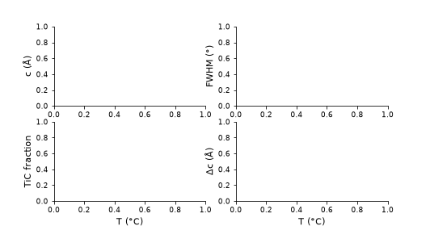

Figures
Custom plots
Any result against any other.
Steps
Refresh All 4 PlotsPick X and Y for up to four panels from the analysis results.Render HeatmapIn-situ heatmap: 2θ against temperature, with intensity as color.Load Fit Results...Import GSAS-II fit results and plot them next to your peak results.
How it works

Worked example
Plot c, FWHM and the TiC fraction against T in three panels to see that the layers shrink (water leaves) well before TiC forms.